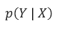

算法简介
决策树算法是一种自上而下的，对样本进行树形分类的算法。是一种有监督的算法
包括特征选择、决策树的生成、决策树的剪枝三个步骤。
几个概念
信息熵
熵在物理学中的定义为：混乱程度，在数学中的定义为：随机变量的不确定性，即熵是随机变量的不确定性的度量。
假设X是取有限个值的随机变量
概率分布：
随机变量X的熵定义为（log以2为底）：
从上面的公式我们可知，熵的值与X的取值无关，只与X的分布和概率有关，因此通常我们写成H(p)，而不是H(X)：
下面举个例子：
那么熵为：
熵——关于不确定性的理解：熵越大：随机变量的不确定性就越大。
假设随机变量X只有两个取值0和1，那么X的分布：
熵的值为：
横坐标为p，纵坐标为H( p)。我们来看三个特殊情况：
当P=0时，H(P)=0，即X的取值一定为1，P(X=0)=1-P=1，此时X的取值是完全确定的，不确定性为0；
当P=1时，H(P)=0，即X的取值一定为0，P(X=0)=P=1，此时X的取值是完全确定的，不确定性为0；
当P=0.5时，H(P)=1，即X的取值为1的概率是50%，取值为0的概率为50%。此时不确定性是最高的。
条件熵
概率： 条件概率：
含义：当事件X发生的情况下，事件Y发生的概率
熵： 条件熵：
含义：已知随机变量X的情况下，随机变量Y的不确定性
条件熵的计算公式
条件熵：，
信息增益
熵与条件熵的差值
符号：，特征A对数据集D的信息增益。其中，g: Gain D：数据集Dataset A：特征Attribute
计算公式：
通俗来讲，当我们知道信息A以后，信息的不确定性发生了变化，变成了H(D)-H(D|A)，如果这个值很大，说明A告诉了我们一些非常有用的信息，数据集变成了一个更加确定的数据集。反过来，如果A带来的信息量很小，即H(D|A)与H(D)的值相近，g(D,A)近似于0，说明A没有给我们带来有用的信息。
决策树算法
这里我们主要讨论决策树中较为经典的ID3算法，它是由罗斯昆（J. Ross Quinlan）于1975年在悉尼大学提出，算法的核心为——信息熵。
1.计算数据集D的熵
2.计算某个特征A对于数据集D的条件熵
3.计算信息增益，选取信息增益最大的特征作为节点
举个例子，其中标签代表银行是否贷款给该用户。
主要步骤如下：
1.计算信息熵
2.计算条件熵
A的取值只有三个：青年、中年和老年，因此对应的概率分别为5/15、5/15、5/15。
其中，H(D1)、H(D2)和H(D3)的概率如下。以D1为例，我们看年龄A=’’青年’’的5个样本中，标签为0的有3个，标签为1的有2个，因此H(D1)的计算如下：
3.计算信息增益
4.计算所有特征的信息增益
找出信息增益最大的特征作为划分特征，其中特征C的信息增益最大，因此选定特征C作为节点。
决策树算法的缺点
以下为ID3算法的缺点：
1.只能处理离散型变量，无法处理连续型变量
2.对于样本缺失值比较敏感（若对于连续型数据，可以通过缺失值前后的数据进行处理补全缺失值，但对于离散型数据无法补）
3.每次分裂倾向于取值较多的特征（由信息熵不确定性定义决定），导致最终泛化性能较差（训练集表现较好，但在测试集上表现较差）
决策树算法的改进
目的：提高决策树的泛化能力
常见的剪枝方法：预剪枝、后剪枝
预剪枝
核心思想：在树中节点进行分裂之前，先计算当前划分能否带来模型泛化能力的提升
三种情况：
a.当树到达一定深度的时候，停止树的生长
b.当到达当前节点的样本数量小于某个阈值的时候，停止生长
c.计算每次分裂时对测试集准确率的提升，小于某个阈值，停止生长
后剪枝
核心思想：首先生长完全生长的决策树，然后自底向上进行剪枝
原则：判断在测试集上的准确率，若剪枝后的准确率没有多少下降，那么该划分是不必要的
决策树算法代码
以下代码实现了决策树的 ID3算法，找到最优分裂节点
1 | from numpy import * |